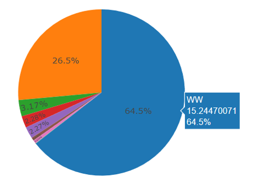
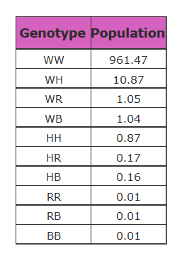
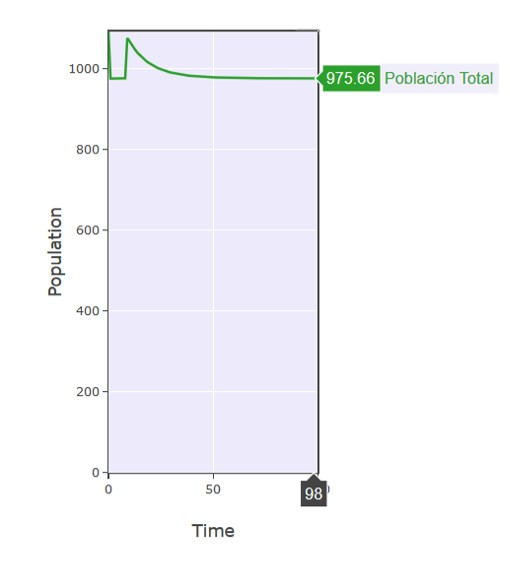
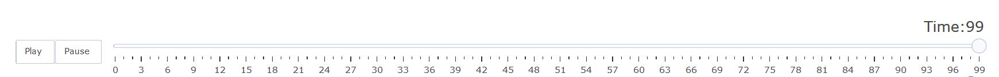

MGDrivE Graph Tool es un software desarrollado en Python por Salomón Olivera Abud que permite al usuario a través de una interfaz gráfica automatizar el proceso de la generación de las representaciones gráficas de las simulaciones obtenidas por MGDrivE.
Para que esta herramienta genere los gráficos es necesario que el usuario ingrese 2 tipos de CSV diferentes, el primero es el conjunto de archivos CSV que representan toda la simulación, cada uno de esos CSV se verá representado como un nodo. El segundo es un solo archivo CSV el cual sirve para posicionar cada nodo de manera geográfica en la gráfica.
Este software produce un archivo .html en el cual se puede observar la animación resultado de los archivos de salida producidos por MGDrivE, entre estos componentes se encuentran:
Los nodos o gráficas de pastel son la representación de cada CSV del primer conjunto de datos ingresados por el usuario, estos son acomodados en la gráfica gracias a las coordenadas dadas por otro CSV el cuál es el segundo dado por el usuario.
Cada nodo representa una población liberada y en la cuál se puede ver como los genotipos van cambiando a través del tiempo, además de que el usuario puede pasar el ratón sobre cada nodo y ver el porcentaje de genotipo, tal y como se muestra en la siguiente imagen:
En la tabla se muestran todos los genotipos de la simulación y el valor actual de la población en ese instante de tiempo que cuenta con este genotipo, en el resultado final se puede apreciar la tabla de la siguiente forma:
La gráfica de población en el tiempo o scatter en inglés nos muestra la suma total de población en el transcurso de la simulación, el usuario puede pasar el ratón sobre cada punto para ver la cantidad exacta y en que instante de tiempo se dio.
Este componente cuenta de 2 partes, la primera son 2 botones llamados Play y Pause los cuales sirven para reproducir la animación y pausar la animación respectivamente. La otra parte es un set de puntos en el tiempo en el cuál el usuario puede posicionarse y ver los resultados de la simulación en ese momento exacto de tiempo
MGDrive es un software enfocado al estudio del dinamismo de las poblaciones de mosquitos y el cual es útil en el estudio genético de las meta-poblaciones de mosquitos conectadas por la migración, también permite el análisis de datos y patrones en la herencia de los genes de los mosquitos, tanto de las hembras como de los machos haciendo una clara diferenciación entre estos.
Los resultados de las simulaciones hechas en esta herramienta entregan como resultado archivos con extensión .CSV para que el usuario pueda decidir la plataforma de su agrado para graficar estos resultados.
Un genotipo es un conjunto de los genes de un individuo, planta o animal en la cual viene incluida su composición alélica.
En MGDrivE se manejan diversos tipos de genotipos los cuales son identificados dependiendo de su inicial:
Un alelo es cada una de las formas alternativas de un gen que ocupan el mismo lugar en los cromosomas homólogos y cuya expresión determina las características del mismo rasgo de organización, como el color de los ojos.